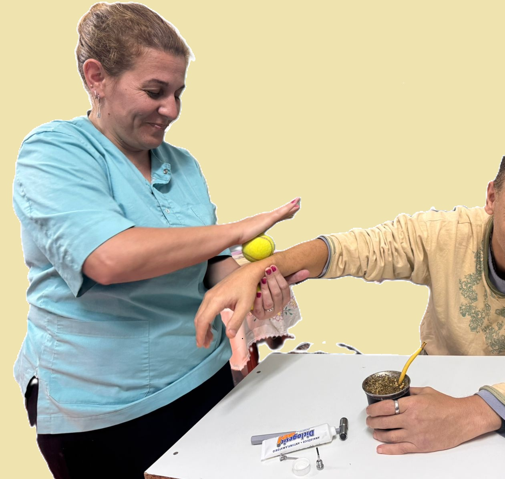
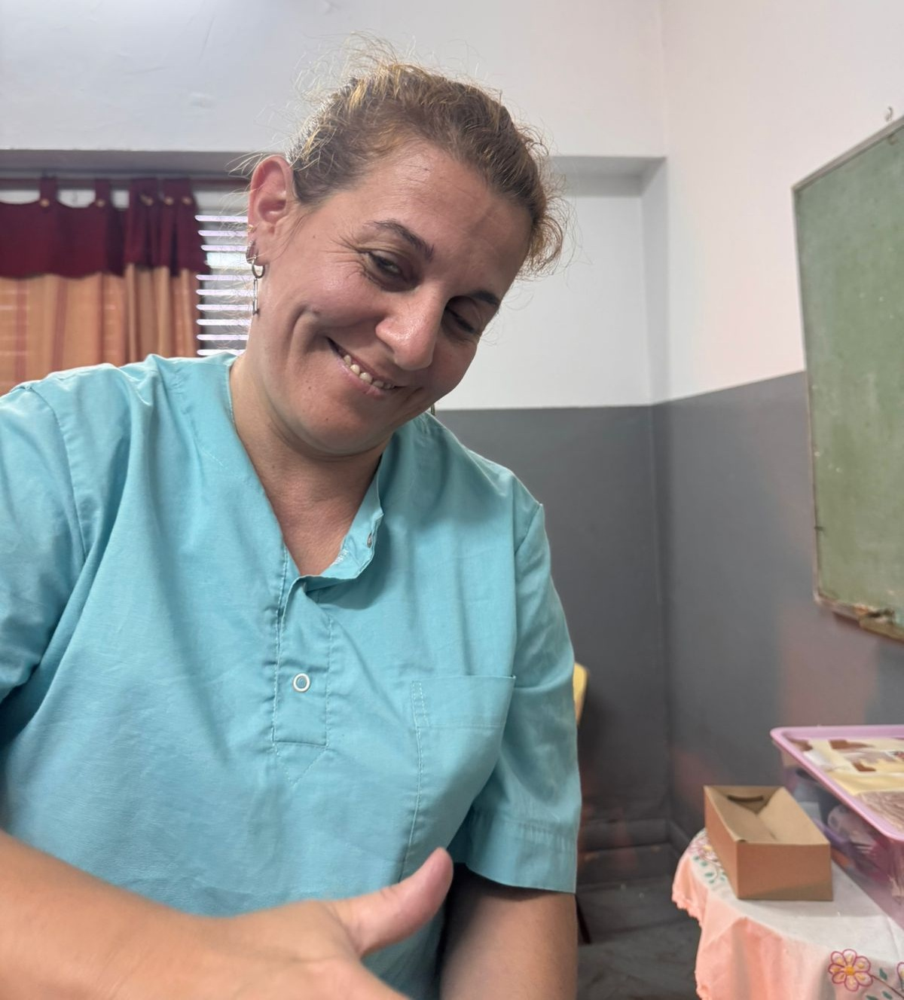

Rehabilitación post-quirúrgica
Recuperación guiada después de cirugías, con seguimiento cercano y ejercicios adaptados a tu evolución.
Kinesiología profesional en Caseros, Tres de Febrero. Atención personalizada para que vuelvas a moverte con libertad.
Reservar mi primera consulta
Cada cuerpo tiene su historia. Trabajamos con un enfoque integral para que recuperes la movilidad y la calidad de vida que merecés.
Recuperación guiada después de cirugías, con seguimiento cercano y ejercicios adaptados a tu evolución.
Alivio de contracturas, cervicales y lumbares. Mejorá tu postura para prevenir futuras molestias.
Tratamiento de lesiones deportivas y preparación para que vuelvas a tu actividad con confianza.
Ejercicios suaves y terapia manual para mantener la independencia y el bienestar en el día a día.

Soy Licenciada en Kinesiología y Fisiatría, con formación continua en terapia manual y rehabilitación. Mi consultorio en Caseros nació con una idea clara: que cada paciente se sienta escuchado, no como un número más.
Creo que la recuperación va más allá de los ejercicios: es entender qué te duele, por qué te duele y acompañarte en el proceso con calidez y profesionalismo. Trabajo con equipos de última generación, pero lo que más me importa es la conexión humana.
"Después de meses con dolor lumbar, en pocas sesiones empecé a sentirme mejor. La atención es excelente y el lugar muy cómodo."
— María, 52 años
"Me lesioné jugando al fútbol y la rehabilitación fue clave. Volví a la cancha en menos tiempo del que pensaba."
— Lucas, 28 años
Trabajamos con equipos de última generación para ofrecerte el mejor tratamiento posible.
Consultorio en Caseros, Tres de Febrero. A pasos de la estación Caseros del Ferrocarril Mitre y de avenidas principales como Libertad y Eva Perón. Fácil acceso en transporte público y en auto.
📍 Caseros, Tres de Febrero
Cerca de estación Caseros
Sí, trabajo con diversas obras sociales. Consultame al momento de reservar tu turno para confirmar si tu obra social está incluida.
Las sesiones suelen durar entre 45 y 60 minutos, según el tratamiento. La primera consulta puede extenderse un poco más para la evaluación completa.
Traé estudios previos si los tenés (radiografías, resonancias), la orden médica si la tenés, y ropa cómoda que te permita moverte con facilidad.